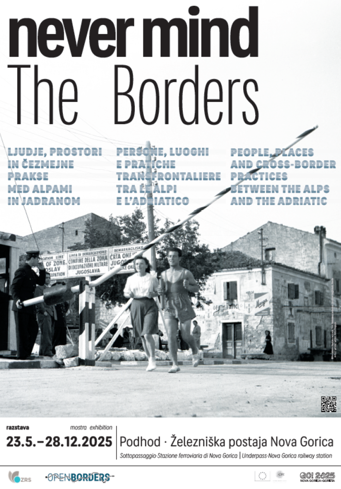

1Politika odprtih meja – poleg množičnega mednarodnega turizma verjetno najvidnejši znak izstopanja Jugoslavije iz hladnovojne matrice – je imela tudi pomembne prostorske razsežnosti, ki so se tako v materialnem kot simbolnem smislu najmočneje usidrale ob severozahodnih mejah nekdanje države, v alpsko-jadranski regiji. Na prvi pogled povsem vsakdanja prizorišča čezmejnih stikov, kot so mejni prehodi, okrepčevalnice ali bencinske črpalke, skozi zgodovinsko retrospektivo učinkujejo kot edinstveni kraji spomina. Prav v teh prostorih se je odvijal s (čez)mejnostjo povezan vsakdanjik ljudi: od imetnikov maloobmejnih prepustnic do obiskovalcev iz bolj oddaljenih krajev, ki sta jih v drugo državo vabila nakupovanje ali turizem, hkrati pa so posamezni kraji v tej čezmejni regiji postali tudi središča povezovanja in sodelovanja, denimo prek športnih dogodkov ali mladinske subkulture.
2Vprašanji, kako razumeti družbeno strukturo teh krajev in prostorov v obdobju med hladno vojno in po njenem koncu ter kaj nam njihova prostorska in družbena pojavnost razkriva o preseganju ideoloških ločnic v 20. stoletju, sta bili v ospredju razprav na mednarodni znanstveni konferenci »Places of Cross-Border Interaction in History: the Alps-Adriatic Region and Beyond [Prostori čezmejnega stika v zgodovini: alpsko-jadranska regija in širše]«. Dogodek, ki ga je 22. in 23. maja 2025 v nadvse simbolnem kraju – Novi Gorici – organiziralo Znanstveno-raziskovalno središče (ZRS) Koper, je povezal raziskovalke in raziskovalce iz kar desetih držav. Med njimi so bili nekateri vodilni strokovnjaki na področju mejne in transnacionalne zgodovine – Pieter Judson, Pamela Ballinger, Martin Klatt, Birte Wassenberg in drugi –, ki so s svojimi prispevki in razpravami dodatno osvetlili kompleksnost čezmejnih interakcij in njihov zgodovinski kontekst.
3Konferenca je potekala v okviru projekta Evropskega raziskovalnega sveta (ERC) z naslovom »Open Borders – Cold War Europe Beyond Borders: A Transnational History of Cross-Border Practices in the Alps-Adriatic Area from World War II to the Present [Odprte meje – Hladnovojna Evropa onkraj meja: transnacionalna zgodovina čezmejnih praks v alpsko-jadranskem prostoru od druge svetovne vojne do danes]«, ki ga od leta 2023 na ZRS Koper vodi Borut Klabjan. Osrednji namen projekta je prepoznati in analizirati kraje čezmejnih interakcij ter raziskati z njimi povezane akterje in prakse, ki so presegale nacionalne in ideološke ločnice. V evropskem kolektivnem spominu in deloma celo v znanstvenem pogledu na hladno vojno še vedno prevladuje predstava o neprepustnosti meja, simbolno utelešena v berlinskem zidu, v zadnjih letih pa so podobe »berlinskosti« začeli projicirati tudi na italijansko vzhodno mejo, pogosto z izmišljenimi in pretiranimi primerjavami, ki jih širijo tamkajšnji mediji. Prav zato – in tudi ob zavedanju, da prostori čezmejne interakcije ponujajo dragocen vpogled tako v historične potenciale kot tudi aktualne probleme evropskega povezovanja – se zdi koncept novogoriške znanstvene konference še toliko smelejši in relevantnejši.
4Študije obmejnosti in z njimi povezan premik raziskovalnega fokusa od središč nacionalnih držav k njihovim obrobjem se vse bolj uveljavljajo tudi v zgodovinopisju. Kot so s pomočjo empirično podkrepljenih primerov pokazali referenti in komentatorji pričujoče konference, gre za izrazito interdisciplinarno raziskovalno področje, ki zahteva uporabo številnih novih teoretskih in metodoloških pristopov. Govorimo lahko o prepletu družbene zgodovine v najširšem pomenu z antropološkimi vpogledi, nujnimi za celostno razumevanje »pokrajine obmejnosti« (borderscape), ki seveda nikoli ni bila imuna za širše geopolitične tokove, a je hkrati delovala tudi kot inkubator praks, ki so se odvijale zunaj teh tokov.
5Že pred normalizacijo meddržavnih odnosov z Avstrijo in Italijo, torej vse od poznih štiridesetih letih, zlasti pa od šestdesetih let dalje, so se, pogosto na lokalno ali regionalno pobudo, konstituirali prostori, v katerih so se obnavljale historična povezanost, soodvisnost in kohezivnost območij, ločenih z novimi mejami. Eden od takšnih primerov, predstavljenih na konferenci, so bili denimo gozdovi, kamor so kmalu po drugi svetovni vojni začeli zahajati lovci z obeh strani meje, ali pa bolnišnice, ki so sprejemale bolnike iz sosednje države. Sčasoma so prostori srečevanja postajali prizorišča novih praks, na primer intelektualnega ustvarjanja, alternativne glasbe in planinstva, kar je še posebej pomembno, če pomislimo, da so bile gore v moderni zgodovini prej simbol razdvajanja kot povezovanja. Konferenco je spremljala tudi okrogla miza, na kateri so se razpravljavci spraševali, ali Evropa danes živi na mejah – vprašanje, ki v času krepitve nacionalnih držav, ponovnega uvajanja mejnega nadzora ter porasta nacionalizmov in suverenističnih teženj, za katere smo v Evropi še nedavno verjeli, da sodijo v preteklost, postaja čedalje bolj aktualno.
6V okviru konference je bila odprta tudi trijezična razstava z naslovom »Never Mind the Borders: ljudje, prostori in čezmejne prakse med Alpami in Jadranom«. Ta bo v svoji fizični različici na ogled vse do konca leta 2025 v podhodu prenovljene novogoriške železniške postaje, v elektronski obliki in kar šestih jezikih pa je dostopna na spletni strani https://nevermind-the-borders.lanvukusic.workers.dev/. Razstava je razdeljena na 13 panelov, pri čemer vsak pripoveduje svojo zgodbo o preseganju meja med državami, narodi in političnimi sistemi, kar nikakor ni teklo linearno. Nasprotno, avtorji in avtorice razstave, sodelavci in sodelavke projekta Open Borders, na noben način ne zanemarjajo in izključujejo dejstva, da so bile mentalne meje pogosto trdovratnejše od fizičnih ovir. Vizualno privlačni panoji, opremljeni s časovnim trakom, ki že sam po sebi nakazuje, da je čas ob meji tekel drugače kot v prestolnicah, obiskovalcem bodisi obudijo osebne spomine na prehajanje meja in čezmejne stike bodisi jih spodbudijo k razmisleku o tem, da mora biti vsak projekt nadnacionalne integracije utemeljen tudi od spodaj navzgor.